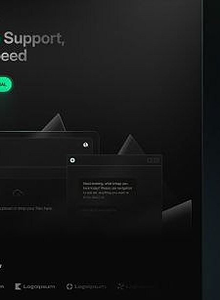

DevOps platform
Ship confidently with continuous delivery — pipelines, observability and humans watching your critical hours.

Platform
Build, test and deploy on every push.
Logs, metrics and alerts in one view.
Experts watching your critical hours.